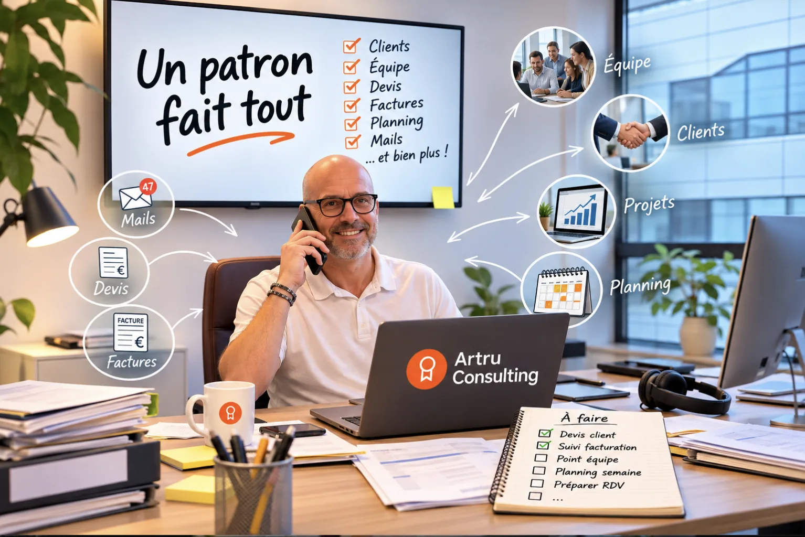

Votre assistant IA, installé chez vous en 2 jours.
Il prépare vos courriers, vos devis, vos relances et vos comptes rendus. Je l'installe avec vous, et il fonctionne avant mon départ.
La démo se fait sur votre propre boîte mail.
8 h 02
Bonjour, voici votre matin.
- 3 mails à traiter aujourd'huisur les 27 reçus cette nuit
- 10 h : rendez-vous clientLe dossier est prêt dans votre agenda

Il lui manque du temps pour l'essentiel.
Commercial, financier, responsable de la communication, du service client : vous portez toutes les casquettes. Vos clients, vos équipes et votre famille passent après l'administratif. L'assistant prend ces tâches. Vous gardez les décisions.
Moi, je gagne environ 2 heures par jour avec ce que je vous installe.
C'est mon estimation, sur mon propre usage. Chaque métier est différent : nous regardons le vôtre pendant la démo.
Le vendredi soir redevient le vendredi soir.
Ce que disent les études
Le gain de temps existe, mais il n'est pas automatique. Voici ce que mesurent des enquêtes récentes.
26 minpar jour
gagnées en moyenne par plus de 20 000 agents de l'administration britannique, sur 3 mois, avec un assistant IA. Gains déclarés par les participants.
Gouvernement britannique, juin 2025
40 à 60 minpar jour
économisées en moyenne par 9 000 utilisateurs de ChatGPT Enterprise, dans une centaine d'entreprises. Enquête d'OpenAI auprès de ses clients.
OpenAI, décembre 2025
17 %seulement
des entreprises de taille intermédiaire qui utilisent l'IA générative (77 % d'entre elles) disent y avoir gagné du temps. 23 % chez les utilisateurs réguliers.
Bpifrance Le Lab, baromètre des ETI, juin 2026
Avoir l'outil ne suffit pas. Ce qui change tout, c'est qu'il soit réglé sur votre façon de travailler, puis utilisé chaque jour. C'est ce que nous faisons en 2 jours.
Mes 2 heures par jour sont au-dessus de ces moyennes, parce que je m'en sers sur presque tout. Ce sont des chiffres d'études, pas une promesse : nous mesurons le vôtre.
Vous portez plusieurs casquettes. L'assistant aussi.
Le jour 1, nous choisissons ensemble les casquettes où vous perdez le plus de temps. Deux exemples, puis le reste de l'entreprise.
Vos courriers, corrigés sans copier-coller
Vous écrivez votre courrier. L'assistant le corrige directement, sans que vous changiez d'outil.
Aujourd'hui
- Vous tapez la lettre
- Vous la copiez dans un autre outil
- Vous recopiez la version corrigée
- Vous vérifiez encore
Avec l'assistant
- Vous tapez la lettre
- Elle est corrigée
- Vous l'envoyez
Votre matin, préparé
Chaque matin, il vous dit quels mails comptent et ce que contient votre agenda. Il prépare les réponses.
Vous relisez et vous validez : c'est vous qui décidez, il n'envoie rien sans votre accord.
Et dans toute l'entreprise
Commercial
Un client demande un prix : le devis est prêt. Relances de prospects, fiche avant chaque rendez-vous. Vous relisez, vous envoyez.
Négociation et appels d'offres
L'assistant lit le cahier des charges et prépare un premier jet avec vos références. Avant un rendez-vous difficile : vos arguments et vos points de repli.
Finance
Relances de factures impayées prêtes à valider, tableau de suivi à jour, une vue claire de ce qui doit rentrer.
Comptabilité
Pièces nommées et classées pour votre comptable, factures repérées dans vos mails, réponses préparées à ses questions. Votre comptable garde son rôle.
Marketing et communication
Posts, newsletters et communiqués dans votre ton, idées de sujets, calendrier de publication. Vous relisez, vous publiez.
Site internet
Pages et textes de votre site rédigés et mis à jour, sans repasser par un prestataire à chaque modification.
Offre et produits
Plaquette, fiches produits, argumentaire et réponses aux questions fréquentes, écrits de façon homogène, en plusieurs langues si besoin.
Logistique
Suivi des commandes et des livraisons, relances fournisseurs, plannings : moins d'appels pour savoir où en est une commande.
Reporting
Chaque lundi, une page : vos chiffres clés, ce qui bouge, ce qui demande votre décision. Il lit vos fichiers et vos outils actuels.
Ressources humaines
Offres d'emploi, réponses aux candidats, trames d'entretien, notes internes, réponses aux questions courantes du personnel. Les décisions restent les vôtres.
Comptes rendus de réunion
À partir de vos notes ou d'un enregistrement : le compte rendu, la liste de ce que chacun doit faire, puis les relances. Si vous enregistrez, vous prévenez les participants.
Clients et réclamations
Réponses calmes et précises, historique du dossier retrouvé, suivi jusqu'à la résolution. Avis en ligne et questions fréquentes compris.
Votre besoin n'est pas dans la liste ? Nous en parlons pendant la démo.
Comment ça se passe
Jour 1 : on choisit et on installe
Nous regardons ensemble comment vous travaillez et le temps que prennent vos tâches. Nous choisissons jusqu'à 3 usages, et je les installe sur vos outils : Gmail, Gemini, ChatGPT, Claude, ce que vous utilisez déjà.
Jour 2 : on règle et on teste
Nous testons sur vos vrais mails, vos vrais devis, vos vrais dossiers. Vous vous en servez seul, devant moi, avant que je parte. Pas de jargon, pas de cours magistral.
Jour 30 : on mesure
Nous reprenons les temps notés le jour 1 et nous comparons. Le chiffre que vous gardez est le vôtre, pas une moyenne d'étude.
Si ça ne marche pas, je continue sans frais.
À la fin des 2 jours, l'assistant fait ce que nous avons décidé ensemble le premier jour. Sinon, je reviens et je continue, sans frais, jusqu'à ce que ce soit le cas.
- Les usages, jusqu'à 3, sont écrits et signés avec vous le jour 1.
- Il s'applique à vos outils actuels, avec les accès que vous me donnez.
- Le suivi sans frais dure 30 jours après les 2 jours, dans la limite de 8 heures de reprise.
- La garantie porte sur le résultat convenu, pas sur de nouveaux besoins ajoutés en route.
Pas de remboursement : on corrige jusqu'à ce que ça marche. Tout est écrit dans le devis que vous signez.
Le prix
Ce prix comprend la préparation, les 2 jours chez vous, l'installation de jusqu'à 3 usages et 30 jours de suivi avec garantie.
Le code et les réglages de votre assistant vous appartiennent. Prix hors taxes.
Après les 30 jours, si vous le souhaitez
Sans engagement de durée pendant les 30 jours. Ensuite, 3 mois minimum, puis mois par mois avec un mois de préavis. Paiement annuel : 10 % de remise.
Vous n'avez rien à gérer
Votre assistant reste hébergé en France, à jour et surveillé. Vos données ne servent jamais à entraîner un modèle d'IA.
Essentiel
190 € HT par mois
- Hébergement en France
- Mises à jour et surveillance
- Correctifs en cas de panne
Suivi
290 € HT par mois
- Tout l'Essentiel
- Un point de 30 minutes chaque mois
- 1 heure d'ajustements incluse
Qui vous accompagne
Pierre Artru, fondateur d'Artru Consulting, près de Lyon.
Pendant plus de 20 ans, j'ai dirigé des agences et des équipes. Je sais ce qu'est une journée de patron : je ne vous parlerai pas comme un informaticien.
Ce que je vous installe, je m'en sers moi-même chaque jour. C'est de là que viennent mes « environ 2 heures ».
Vos questions
Combien de temps vais-je vraiment gagner ?
Cela dépend de votre façon de travailler. Les études donnent des moyennes de 26 minutes à une heure par jour. Je gagne environ 2 heures, c'est mon estimation. Le jour 1, nous notons le temps que vous passez sur vos tâches, et le jour 30 nous comparons. Je ne vous promets pas un chiffre à l'avance.
Faut-il changer mes outils ?
Non. J'installe l'assistant sur ce que vous utilisez déjà. Si vous n'avez pas de préférence, je vous conseille l'outil le plus simple pour votre cas.
Et si je ne suis pas à l'aise avec l'informatique ?
C'est pour vous que cette offre existe. Nous avançons à votre rythme, devant vos propres mails.
L'assistant peut-il envoyer un mail sans moi ?
Non. Il prépare, vous relisez, vous validez. Un humain garde toujours la main.
L'assistant remplace-t-il mon comptable ou mes équipes ?
Non. Il prépare le travail répétitif : brouillons, relances, pièces classées, comptes rendus. Votre comptable et vos équipes gardent leurs rôles, et vous gardez les décisions.
Peut-on faire financer cette prestation par un OPCO ?
Non. C'est du conseil et de l'installation, pas une action de formation : elle n'est pas prise en charge par les OPCO. Si vous cherchez une formation, parlons-en séparément.
Où vont mes données ?
L'assistant est hébergé en France. Vos données ne servent jamais à entraîner un modèle d'IA.
Où cela se passe-t-il ?
Chez vous, autour de Lyon, ou à distance.
Que devient l'assistant après les 2 jours ?
Il reste installé chez vous, et le code et les réglages vous appartiennent. Si vous voulez qu'il soit suivi dans la durée, c'est possible en option.